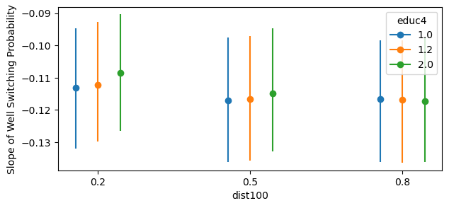
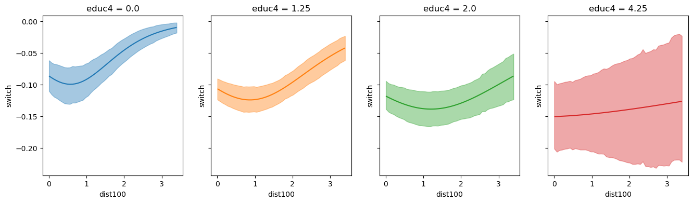
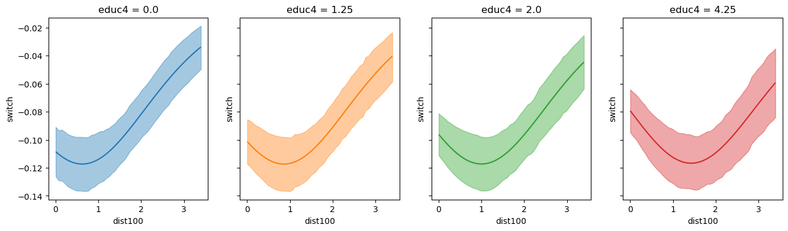
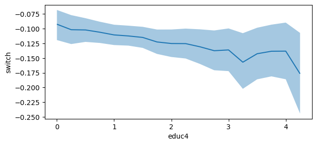
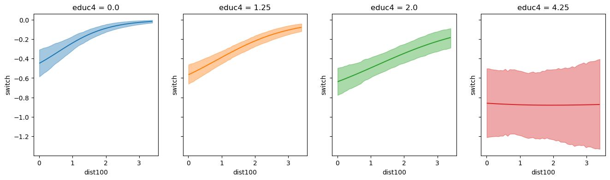
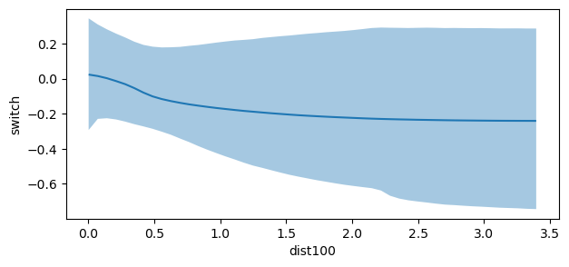
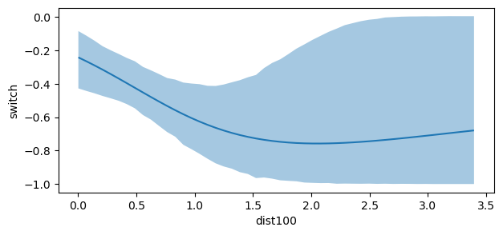

Google Summer of Code - Average Predictive Slopes
It is currently the beginning of week ten of Google Summer of Code 2023. According to the original deliverables table outlined in my proposal, the goal was to have opened a draft PR for the basic functionality of the plot_slopes. Subsequently, week 11 was reserved to further develop the plot_slopes function, and to write tests and a notebook for the documentation, respectively.
However, at the beginning of week ten, I have a PR open with the majority of the functionality that marginaleffects has for slopes. In addition, I also exposed the slopes function, added tests, and have a PR open for the documentation.
Below is the documentation for slopes and plot_slopes in Bambi, and is a culmination of the work completed in weeks five through nine.
Plot Slopes
Bambi’s sub-package interpret features a set of functions to help interpret complex regression models. The sub-package is inspired by the R package marginaleffects. In this notebook we will discuss two functions slopes and plot_slopes. These two functions allow the modeler to easier interpret slopes, either by a inspecting a summary output or plotting them.
Below, it is described why estimating the slope of the prediction function is useful in interpreting generalized linear models (GLMs), how this methodology is implemented in Bambi, and how to use slopes and plot_slopes. It is assumed that the reader is familiar with the basics of GLMs. If not, refer to the Bambi Basic Building Blocks example.
Interpretation of Regression Coefficients
Assuming we have fit a linear regression model of the form
$$y = \beta_0 + \beta_1 x_1 + \beta_2 x_2 + \dots + \beta_k x_k + \epsilon$$
the “safest” interpretation of the regression coefficients $\beta$ is as a comparison between two groups of items that differ by $1$ in the relevant predictor variable $x_i$ while being identical in all the other predictors. Formally, the predicted difference between two items $i$ and $j$ that differ by an amount $n$ on predictor $k$, but are identical on all other predictors, the predicted difference is $y_i - y_j$ is $\beta_kx$, on average.
However, once we move away from a regression model with a Gaussian response, the identity function, and no interaction terms, the interpretation of the coefficients are not as straightforward. For example, in a logistic regression model, the coefficients are on a different scale and are measured in logits (log odds), not probabilities or percentage points. Thus, you cannot interpret the coefficents as a “one unit increase in $x_k$ is associated with an $n$ percentage point decrease in $y$”. First, the logits must be converted to the probability scale. Secondly, a one unit change in $x_k$ may produce a larger or smaller change in the outcome, depending upon how far away from zero the logits are.
slopes and plot_slopes, by default, computes quantities of interest on the response scale for GLMs. For example, for a logistic regression model, this is the probability scale, and for a Poisson regression model, this is the count scale.
Interpreting interaction effects
Specifying interactions in a regression model is a way of allowing parameters to be conditional on certain aspects of the data. By contrast, for a model with no interactions, the parameters are not conditional and thus, the value of one parameter is not dependent on the value of another covariate. However, once interactions exist, multiple parameters are always in play at the same time. Additionally, interactions can be specified for either categorical, continuous, or both types of covariates. Thus, making the interpretation of the parameters more difficult.
With GLMs, every covariate essentially interacts with itself because of the link function. To demonstrate parameters interacting with themselves, consider the mean of a Gaussian linear model with an identity link function
$$\mu = \alpha + \beta x$$
where the rate of change in $\mu$ with respect to $x$ is just $\beta$, i.e., the rate of change is constant no matter what the value of $x$ is. But when we consider GLMs with link functions used to map outputs to exponential family distribution parameters, calculating the derivative of the mean output $\mu$ with respect to the predictor is not as straightforward as in the Gaussian linear model. For example, computing the rate of change in a binomial probability $p$ with respect to $x$
$$p = \frac{exp(\alpha + \beta x)}{1 + exp(\alpha + \beta x)}$$
And taking the derivative of $p$ with respect to $x$ yields
$$\frac{\partial p}{\partial x} = \frac{\beta}{2(1 + cosh(\alpha + \beta x))}$$
Since $x$ appears in the derivative, the impact of a change in $x$ depends upon $x$, i.e., an interaction with itself even though no interaction term was specified in the model.Thus, visualizing the rate of change in the mean response with respect to a covariate $x$ becomes a useful tool in interpreting GLMs.
Average Predictive Slopes
Here, we adopt the notation from Chapter 14.4 of Regression and Other Stories to first describe average predictive differences which is essential to computing slopes, and then secondly, average predictive slopes. Assume we have fit a Bambi model predicting an outcome $Y$ based on inputs $X$ and parameters $\theta$. Consider the following scalar inputs:
$$w: \text{the input of interest}$$ $$c: \text{all the other inputs}$$ $$X = (w, c)$$
In contrast to comparisons, for slopes we are interested in comparing $w^{\text{value}}$ to $w^{\text{value}+\epsilon}$ (perhaps age = 60 and 60.0001 respectively) with all other inputs $c$ held constant. The predictive difference in the outcome changing only $w$ is:
$$\text{average predictive difference} = \mathbb{E}(y|w^{\text{value}}, c, \theta) - \mathbb{E}(y|w^{\text{value}+\epsilon}, c, \theta)$$
Selecting $w$ and $w^{\text{value}+\epsilon}$ and averaging over all other inputs $c$ in the data gives you a new “hypothetical” dataset and corresponds to counting all pairs of transitions of $(w^\text{value})$ to $(w^{\text{value}+\epsilon})$, i.e., differences in $w$ with $c$ held constant. The difference between these two terms is the average predictive difference.
However, to obtain the slope estimate, we need to take the above formula and divide by $\epsilon$ to obtain the average predictive slope:
$$\text{average predictive slope} = \frac{\mathbb{E}(y|w^{\text{value}}, c, \theta) - \mathbb{E}(y|w^{\text{value}+\epsilon}, c, \theta)}{\epsilon}$$
Computing Slopes
The objective of slopes and plot_slopes is to compute the rate of change (slope) in the mean of the response $y$ with respect to a small change $\epsilon$ in the predictor $x$ conditional on other covariates $c$ specified in the model. $w$ is specified by the user and the original value is either provided by the user, else a default value (the mean) is computed by Bambi. The values for the other covariates $c$ specified in the model can be determined under the following three scenarios:
- user provided values
- a grid of equally spaced and central values
- empirical distribution (original data used to fit the model)
In the case of (1) and (2) above, Bambi assembles all pairwise combinations (transitions) of $w$ and $c$ into a new “hypothetical” dataset. In (3), Bambi uses the original $c$, and adds a small amount $\epsilon$ to each unit of observation’s $w$. In each scenario, predictions are made on the data using the fitted model. Once the predictions are made, comparisons are computed using the posterior samples by taking the difference in the predicted outcome for each pair of transitions and dividing by $\epsilon$. The average of these slopes is the average predictive slopes.
For variables $w$ with a string or categorical data type, the comparisons function is called to compute the expected difference in group means. Please refer to the comparisons documentation for more details.
Below, we present several examples showing how to use Bambi to perform these computations for us, and to return either a summary dataframe, or a visualization of the results.
import arviz as az
import pandas as pd
import bambi as bmbLogistic Regression
To demonstrate slopes and plot_slopes, we will use the well switching dataset to model the probability a household in Bangladesh switches water wells. The data are for an area of Arahazar Upazila, Bangladesh. The researchers labelled each well with its level of arsenic and an indication of whether the well was “safe” or “unsafe”. Those using unsafe wells were encouraged to switch. After several years, it was determined whether each household using an unsafe well had changed its well. The data contains $3020$ observations on the following five variables:
switch: a factor with levelsnoandyesindicating whether the household switched to a new wellarsenic: the level of arsenic in the old well (measured in micrograms per liter)dist: the distance to the nearest safe well (measured in meters)assoc: a factor with levelsnoandyesindicating whether the household is a member of an arsenic education groupeduc: years of education of the household head
First, a logistic regression model with no interactions is fit to the data. Subsequently, to demonstrate the benefits of plot_slopes in interpreting interactions, we will fit a logistic regression model with an interaction term.
data = pd.read_csv("http://www.stat.columbia.edu/~gelman/arm/examples/arsenic/wells.dat", sep=" ")
data["switch"] = pd.Categorical(data["switch"])
data["dist100"] = data["dist"] / 100
data["educ4"] = data["educ"] / 4
data.head()| switch | arsenic | dist | assoc | educ | dist100 | educ4 | |
|---|---|---|---|---|---|---|---|
| 1 | 1 | 2.36 | 16.826000 | 0 | 0 | 0.16826 | 0.0 |
| 2 | 1 | 0.71 | 47.321999 | 0 | 0 | 0.47322 | 0.0 |
| 3 | 0 | 2.07 | 20.966999 | 0 | 10 | 0.20967 | 2.5 |
| 4 | 1 | 1.15 | 21.486000 | 0 | 12 | 0.21486 | 3.0 |
| 5 | 1 | 1.10 | 40.874001 | 1 | 14 | 0.40874 | 3.5 |
well_model = bmb.Model(
"switch ~ dist100 + arsenic + educ4",
data,
family="bernoulli"
)
well_idata = well_model.fit(
draws=1000,
target_accept=0.95,
random_seed=1234,
chains=4
)User provided values
First, an example of scenario 1 (user provided values) is given below. In both plot_slopes and slopes, $w$ and $c$ are represented by wrt (with respect to) and conditional, respectively. The modeler has the ability to pass their own values for wrt and conditional by using a dictionary where the key-value pairs are the covariate and value(s) of interest.
For example, if we wanted to compute the slope of the probability of switching wells for a typical arsenic value of $1.3$ conditional on a range of dist and educ values, we would pass the following dictionary in the code block below. By default, for $w$, Bambi compares $w^\text{value}$ to $w^{\text{value} + \epsilon}$ where $\epsilon =$ 1e-4. However, the value for $\epsilon$ can be changed by passing a value to the argument eps.
Thus, in this example, $w^\text{value} = 1.3$ and $w^{\text{value} + \epsilon} = 1.3001$. The user is not limited to passing a list for the values. A np.array can also be used. Furthermore, Bambi by default, maps the order of the dict keys to the main, group, and panel of the matplotlib figure. Below, since dist100 is the first key, this is used for the x-axis, and educ4 is used for the group (color). If a third key was passed, it would be used for the panel (facet).
fig, ax = bmb.interpret.plot_slopes(
well_model,
well_idata,
wrt={"arsenic": 1.3},
conditional={"dist100": [0.20, 0.50, 0.80], "educ4": [1.00, 1.20, 2.00]},
)
fig.set_size_inches(7, 3)
fig.axes[0].set_ylabel("Slope of Well Switching Probability");
The plot above shows that, for example, conditional on dist100 $= 0.2$ and educ4 $= 1.0$ a unit increase in arsenic is associated with households being $11$% less likely to switch wells. Notice that even though we fit a logistic regression model where the coefficients are on the log-odds scale, the slopes function returns the slope on the probability scale. Thus, we can interpret the y-axis (slope) as the expected change in the probability of switching wells for a unit increase in arsenic conditional on the specified covariates.
slopes can be called directly to view a summary dataframe that includes the term name, estimate type (discussed in detail in the interpreting coefficients as an elasticity section), values $w$ used to compute the estimate, the specified conditional covariates $c$, and the expected slope of the outcome with the uncertainty interval (by default the $94$% highest density interval is computed).
bmb.interpret.slopes(
well_model,
well_idata,
wrt={"arsenic": 1.5},
conditional={
"dist100": [0.20, 0.50, 0.80],
"educ4": [1.00, 1.20, 2.00]
}
)| term | estimate_type | value | dist100 | educ4 | estimate | lower_3.0% | upper_97.0% | |
|---|---|---|---|---|---|---|---|---|
| 0 | arsenic | dydx | (1.5, 1.5001) | 0.2 | 1.0 | -0.110797 | -0.128775 | -0.092806 |
| 1 | arsenic | dydx | (1.5, 1.5001) | 0.2 | 1.2 | -0.109867 | -0.126725 | -0.091065 |
| 2 | arsenic | dydx | (1.5, 1.5001) | 0.2 | 2.0 | -0.105618 | -0.122685 | -0.088383 |
| 3 | arsenic | dydx | (1.5, 1.5001) | 0.5 | 1.0 | -0.116087 | -0.134965 | -0.096843 |
| 4 | arsenic | dydx | (1.5, 1.5001) | 0.5 | 1.2 | -0.115632 | -0.134562 | -0.096543 |
| 5 | arsenic | dydx | (1.5, 1.5001) | 0.5 | 2.0 | -0.113140 | -0.130448 | -0.093209 |
| 6 | arsenic | dydx | (1.5, 1.5001) | 0.8 | 1.0 | -0.117262 | -0.136850 | -0.098549 |
| 7 | arsenic | dydx | (1.5, 1.5001) | 0.8 | 1.2 | -0.117347 | -0.136475 | -0.098044 |
| 8 | arsenic | dydx | (1.5, 1.5001) | 0.8 | 2.0 | -0.116957 | -0.135079 | -0.096476 |
Since all covariates used to fit the model were also specified to compute the slopes, no default value is used for unspecified covariates. A default value is computed for the unspecified covariates because in order to peform predictions, Bambi is expecting a value for each covariate used to fit the model. Additionally, with GLM models, average predictive slopes are conditional in the sense that the estimate depends on the values of all the covariates in the model. Thus, for unspecified covariates, slopes and plot_slopes computes a default value (mean or mode based on the data type of the covariate). Each row in the summary dataframe is read as “the slope (or rate of change) of the probability of switching wells with respect to a small change in $w$ conditional on $c$ is $y$”.
Multiple slope values
Users can also compute slopes on multiple values for wrt. For example, if we want to compute the slope of $y$ with respect to arsenic $= 1.5$, $2.0$, and $2.5$, simply pass a list or numpy array as the dictionary values for wrt. Keeping the conditional covariate and values the same, the following slope estimates are computed below.
multiple_values = bmb.interpret.slopes(
well_model,
well_idata,
wrt={"arsenic": [1.5, 2.0, 2.5]},
conditional={
"dist100": [0.20, 0.50, 0.80],
"educ4": [1.00, 1.20, 2.00]
}
)
multiple_values.head(6)| term | estimate_type | value | dist100 | educ4 | estimate | lower_3.0% | upper_97.0% | |
|---|---|---|---|---|---|---|---|---|
| 0 | arsenic | dydx | (1.5, 1.5001) | 0.2 | 1.0 | -0.110797 | -0.128775 | -0.092806 |
| 1 | arsenic | dydx | (2.0, 2.0001) | 0.2 | 1.0 | -0.109867 | -0.126725 | -0.091065 |
| 2 | arsenic | dydx | (2.5, 2.5001) | 0.2 | 1.0 | -0.105618 | -0.122685 | -0.088383 |
| 3 | arsenic | dydx | (1.5, 1.5001) | 0.2 | 1.2 | -0.116087 | -0.134965 | -0.096843 |
| 4 | arsenic | dydx | (2.0, 2.0001) | 0.2 | 1.2 | -0.115632 | -0.134562 | -0.096543 |
| 5 | arsenic | dydx | (2.5, 2.5001) | 0.2 | 1.2 | -0.113140 | -0.130448 | -0.093209 |
The output above is essentially the same as the summary dataframe when we only passed one value to wrt. However, now each element (value) in the list gets a small amount $\epsilon$ added to it, and the slope is calculated for each of these values.
Conditional slopes
As stated in the interpreting interaction effects section, interpreting coefficients of multiple interaction terms can be difficult and cumbersome. Thus, plot_slopes provides an effective way to visualize the conditional slopes of the interaction effects. Below, we will use the same well switching dataset, but with interaction terms. Specifically, one interaction is added between dist100 and educ4, and another between arsenic and educ4.
well_model_interact = bmb.Model(
"switch ~ dist100 + arsenic + educ4 + dist100:educ4 + arsenic:educ4",
data,
family="bernoulli"
)
well_idata_interact = well_model_interact.fit(
draws=1000,
target_accept=0.95,
random_seed=1234,
chains=4
)# summary of coefficients
az.summary(well_idata_interact)| mean | sd | hdi_3% | hdi_97% | mcse_mean | mcse_sd | ess_bulk | ess_tail | r_hat | |
|---|---|---|---|---|---|---|---|---|---|
| Intercept | -0.097 | 0.122 | -0.322 | 0.137 | 0.003 | 0.002 | 2259.0 | 2203.0 | 1.0 |
| dist100 | 1.320 | 0.175 | 0.982 | 1.640 | 0.004 | 0.003 | 2085.0 | 2457.0 | 1.0 |
| arsenic | -0.398 | 0.061 | -0.521 | -0.291 | 0.001 | 0.001 | 2141.0 | 2558.0 | 1.0 |
| educ4 | 0.102 | 0.080 | -0.053 | 0.246 | 0.002 | 0.001 | 1935.0 | 2184.0 | 1.0 |
| dist100:educ4 | -0.330 | 0.106 | -0.528 | -0.136 | 0.002 | 0.002 | 2070.0 | 2331.0 | 1.0 |
| arsenic:educ4 | -0.079 | 0.043 | -0.161 | -0.000 | 0.001 | 0.001 | 2006.0 | 2348.0 | 1.0 |
The coefficients of the linear model are shown in the table above. The interaction coefficents indicate the slope varies in a continuous fashion with the continuous variable.
A negative value for arsenic:dist100 indicates that the “effect” of arsenic on the outcome is less negative as distance from the well increases. Similarly, a negative value for arsenic:educ4 indicates that the “effect” of arsenic on the outcome is more negative as education increases. Remember, these coefficients are still on the logit scale. Furthermore, as more variables and interaction terms are added to the model, interpreting these coefficients becomes more difficult.
Thus, lets use plot_slopes to visually see how the slope changes with respect to arsenic conditional on dist100 and educ4 changing. Notice in the code block below how parameters are passed to the subplot_kwargs and fig_kwargs arguments. At times, it can be useful to pass specific group and panel arguments to aid in the interpretation of the plot. Therefore, subplot_kwargs allows the user to manipulate the plotting by passing a dictionary where the keys are {"main": ..., "group": ..., "panel": ...} and the values are the names of the covariates to be plotted. fig_kwargs are figure level key word arguments such as figsize and sharey.
fig, ax = bmb.interpret.plot_slopes(
well_model_interact,
well_idata_interact,
wrt="arsenic",
conditional=["dist100", "educ4"],
subplot_kwargs={"main": "dist100", "group": "educ4", "panel": "educ4"},
fig_kwargs={"figsize": (16, 4), "sharey": True},
legend=False
)
With interaction terms now defined, it can be seen how the slope of the outcome with respect to arsenic differ depending on the value of educ4. Especially in the case of educ4 $= 4.25$, the slope is more “constant”, but with greater uncertainty. Lets compare this with the model that does not include any interaction terms.
fig, ax = bmb.interpret.plot_slopes(
well_model,
well_idata,
wrt="arsenic",
conditional=["dist100", "educ4"],
subplot_kwargs={"main": "dist100", "group": "educ4", "panel": "educ4"},
fig_kwargs={"figsize": (16, 4), "sharey": True},
legend=False
)
For the non-interaction model, conditional on a range of values for educ4 and dist100, the slopes of the outcome are nearly identical.
Unit level slopes
Evaluating average predictive slopes at central values for the conditional covariates $c$ can be problematic when the inputs have a large variance since no single central value (mean, median, etc.) is representative of the covariate. This is especially true when $c$ exhibits bi or multimodality. Thus, it may be desireable to use the empirical distribution of $c$ to compute the predictive slopes, and then average over a specific or set of covariates to obtain average slopes. To achieve unit level slopes, do not pass a parameter into conditional and or specify None.
unit_level = bmb.interpret.slopes(
well_model_interact,
well_idata_interact,
wrt="arsenic",
conditional=None
)
# empirical distribution
print(unit_level.shape[0] == well_model_interact.data.shape[0])
unit_level.head(10)True
| term | estimate_type | value | dist100 | educ4 | estimate | lower_3.0% | upper_97.0% | |
|---|---|---|---|---|---|---|---|---|
| 0 | arsenic | dydx | (2.36, 2.3601) | 0.16826 | 0.00 | -0.084280 | -0.105566 | -0.063403 |
| 1 | arsenic | dydx | (0.71, 0.7101) | 0.47322 | 0.00 | -0.097837 | -0.125057 | -0.070959 |
| 2 | arsenic | dydx | (2.07, 2.0701) | 0.20967 | 2.50 | -0.118093 | -0.139848 | -0.093442 |
| 3 | arsenic | dydx | (1.15, 1.1501) | 0.21486 | 3.00 | -0.150638 | -0.194765 | -0.108946 |
| 4 | arsenic | dydx | (1.1, 1.1001) | 0.40874 | 3.50 | -0.161272 | -0.214761 | -0.108663 |
| 5 | arsenic | dydx | (3.9, 3.9001) | 0.69518 | 2.25 | -0.073908 | -0.080525 | -0.067493 |
| 6 | arsenic | dydx | (2.97, 2.9701000000000004) | 0.80711 | 1.00 | -0.108482 | -0.123517 | -0.093042 |
| 7 | arsenic | dydx | (3.24, 3.2401000000000004) | 0.55146 | 2.50 | -0.088049 | -0.097939 | -0.078020 |
| 8 | arsenic | dydx | (3.28, 3.2801) | 0.52647 | 0.00 | -0.087388 | -0.107331 | -0.068076 |
| 9 | arsenic | dydx | (2.52, 2.5201000000000002) | 0.75072 | 0.00 | -0.099035 | -0.129517 | -0.073222 |
well_model_interact.data.head(10)| switch | arsenic | dist | assoc | educ | dist100 | educ4 | |
|---|---|---|---|---|---|---|---|
| 1 | 1 | 2.36 | 16.826000 | 0 | 0 | 0.16826 | 0.00 |
| 2 | 1 | 0.71 | 47.321999 | 0 | 0 | 0.47322 | 0.00 |
| 3 | 0 | 2.07 | 20.966999 | 0 | 10 | 0.20967 | 2.50 |
| 4 | 1 | 1.15 | 21.486000 | 0 | 12 | 0.21486 | 3.00 |
| 5 | 1 | 1.10 | 40.874001 | 1 | 14 | 0.40874 | 3.50 |
| 6 | 1 | 3.90 | 69.517998 | 1 | 9 | 0.69518 | 2.25 |
| 7 | 1 | 2.97 | 80.710999 | 1 | 4 | 0.80711 | 1.00 |
| 8 | 1 | 3.24 | 55.146000 | 0 | 10 | 0.55146 | 2.50 |
| 9 | 1 | 3.28 | 52.646999 | 1 | 0 | 0.52647 | 0.00 |
| 10 | 1 | 2.52 | 75.071999 | 1 | 0 | 0.75072 | 0.00 |
Above, unit_level is the slopes summary dataframe and well_model_interact.data is the empirical data used to fit the model. Notice how the values for $c$ are identical in both dataframes. However, for $w$, the values are the original $w$ value plus $\epsilon$. Thus, the estimate value represents the instantaneous rate of change for that unit of observation. However, these unit level slopes are difficult to interpret since each row may have a different slope estimate. Therefore, it is useful to average over (marginalize) the estimates to summarize the unit level predictive slopes.
Marginalizing over covariates
Since the empirical distrubution is used for computing the average predictive slopes, the same number of rows ($3020$) is returned as the data used to fit the model. To average over a covariate, use the average_by argument. If True is passed, then slopes averages over all covariates. Else, if a single or list of covariates are passed, then slopes averages by the covariates passed.
bmb.interpret.slopes(
well_model_interact,
well_idata_interact,
wrt="arsenic",
conditional=None,
average_by=True
)| term | estimate_type | estimate | lower_3.0% | upper_97.0% | |
|---|---|---|---|---|---|
| 0 | arsenic | dydx | -0.111342 | -0.134846 | -0.088171 |
The code block above is equivalent to taking the mean of the estimate and uncertainty columns. For example:
unit_level[["estimate", "lower_3.0%", "upper_97.0%"]].mean()estimate -0.111342
lower_3.0% -0.134846
upper_97.0% -0.088171
dtype: float64
Average by subgroups
Averaging over all covariates may not be desired, and you would rather average by a group or specific covariate. To perform averaging by subgroups, users can pass a single or list of covariates to average_by to average over specific covariates. For example, if we wanted to average by educ4:
# average by educ4
bmb.interpret.slopes(
well_model_interact,
well_idata_interact,
wrt="arsenic",
conditional=None,
average_by="educ4"
)| term | estimate_type | educ4 | estimate | lower_3.0% | upper_97.0% | |
|---|---|---|---|---|---|---|
| 0 | arsenic | dydx | 0.00 | -0.092389 | -0.119320 | -0.068167 |
| 1 | arsenic | dydx | 0.25 | -0.101704 | -0.126096 | -0.076910 |
| 2 | arsenic | dydx | 0.50 | -0.102112 | -0.122443 | -0.082142 |
| 3 | arsenic | dydx | 0.75 | -0.106004 | -0.124247 | -0.088132 |
| 4 | arsenic | dydx | 1.00 | -0.110580 | -0.127803 | -0.093221 |
| 5 | arsenic | dydx | 1.25 | -0.112334 | -0.128771 | -0.094870 |
| 6 | arsenic | dydx | 1.50 | -0.114875 | -0.132652 | -0.096790 |
| 7 | arsenic | dydx | 1.75 | -0.122557 | -0.142921 | -0.101423 |
| 8 | arsenic | dydx | 2.00 | -0.125187 | -0.148096 | -0.101350 |
| 9 | arsenic | dydx | 2.25 | -0.125367 | -0.150676 | -0.099852 |
| 10 | arsenic | dydx | 2.50 | -0.130748 | -0.159912 | -0.101058 |
| 11 | arsenic | dydx | 2.75 | -0.137422 | -0.170662 | -0.102995 |
| 12 | arsenic | dydx | 3.00 | -0.136103 | -0.172119 | -0.099548 |
| 13 | arsenic | dydx | 3.25 | -0.156941 | -0.202215 | -0.107625 |
| 14 | arsenic | dydx | 3.50 | -0.142571 | -0.186079 | -0.098362 |
| 15 | arsenic | dydx | 3.75 | -0.138336 | -0.181042 | -0.093120 |
| 16 | arsenic | dydx | 4.00 | -0.138152 | -0.185974 | -0.089611 |
| 17 | arsenic | dydx | 4.25 | -0.176623 | -0.244273 | -0.107141 |
# average by both educ4 and dist100
bmb.interpret.slopes(
well_model_interact,
well_idata_interact,
wrt="arsenic",
conditional=None,
average_by=["educ4", "dist100"]
)| term | estimate_type | educ4 | dist100 | estimate | lower_3.0% | upper_97.0% | |
|---|---|---|---|---|---|---|---|
| 0 | arsenic | dydx | 0.00 | 0.00591 | -0.085861 | -0.109133 | -0.061614 |
| 1 | arsenic | dydx | 0.00 | 0.02409 | -0.096272 | -0.127518 | -0.069670 |
| 2 | arsenic | dydx | 0.00 | 0.02454 | -0.056617 | -0.065433 | -0.046970 |
| 3 | arsenic | dydx | 0.00 | 0.02791 | -0.097646 | -0.128131 | -0.069660 |
| 4 | arsenic | dydx | 0.00 | 0.03252 | -0.076300 | -0.095832 | -0.057900 |
| ... | ... | ... | ... | ... | ... | ... | ... |
| 2992 | arsenic | dydx | 4.00 | 1.13727 | -0.070078 | -0.094698 | -0.046623 |
| 2993 | arsenic | dydx | 4.00 | 1.14418 | -0.125547 | -0.172943 | -0.075368 |
| 2994 | arsenic | dydx | 4.00 | 1.25308 | -0.156780 | -0.218836 | -0.088258 |
| 2995 | arsenic | dydx | 4.00 | 1.67025 | -0.161465 | -0.227211 | -0.085394 |
| 2996 | arsenic | dydx | 4.25 | 0.29633 | -0.176623 | -0.244273 | -0.107141 |
2997 rows × 7 columns
It is still possible to use plot_slopes when passing an argument to average_by. In the plot below, the empirical distribution is used to compute unit level slopes with respect to arsenic and then averaged over educ4 to obtain the average predictive slopes.
fig, ax = bmb.interpret.plot_slopes(
well_model_interact,
well_idata_interact,
wrt="arsenic",
conditional=None,
average_by="educ4"
)
fig.set_size_inches(7, 3)
Interpreting coefficients as an elasticity
In some fields, such as economics, it is useful to interpret the results of a regression model in terms of an elasticity (a percent change in $x$ is associated with a percent change in $y$) or semi-elasticity (a unit change in $x$ is associated with a percent change in $y$, or vice versa). Typically, this is achieved by fitting a model where either the outcome and or the covariates are log-transformed. However, since the log transformation is performed by the modeler, to compute elasticities for slopes and plot_slopes, Bambi “post-processes” the predictions to compute the elasticities. Below, it is shown the possible elasticity arguments and how they are computed for slopes and plot_slopes:
eyex: a percentage point increase in $x_1$ is associated with an $n$ percentage point increase in $y$
$$\frac{\partial \hat{y}}{\partial x_1} * \frac{x_1}{\hat{y}}$$
eydx: a unit increase in $x_1$ is associated with an $n$ percentage point increase in $y$
$$\frac{\partial \hat{y}}{\partial x_1} * \frac{1}{\hat{y}}$$
dyex: a percentage point increase in $x_1$ is associated with an $n$ unit increase in $y$
$$\frac{\partial \hat{y}}{\partial x_1} * x_1$$
Below, each code cell shows the same model, and wrt and conditional argument, but with a different elasticity (slope) argument. By default, dydx (a derivative with no post-processing) is used.
bmb.interpret.slopes(
well_model_interact,
well_idata_interact,
wrt="arsenic",
slope="eyex",
conditional=None,
average_by=True
)| term | estimate_type | estimate | lower_3.0% | upper_97.0% | |
|---|---|---|---|---|---|
| 0 | arsenic | eyex | -0.525124 | -0.652708 | -0.396082 |
bmb.interpret.slopes(
well_model_interact,
well_idata_interact,
wrt="arsenic",
slope="eydx",
conditional=None,
average_by=True
)| term | estimate_type | estimate | lower_3.0% | upper_97.0% | |
|---|---|---|---|---|---|
| 0 | arsenic | eydx | -0.286753 | -0.351592 | -0.220459 |
bmb.interpret.slopes(
well_model_interact,
well_idata_interact,
wrt="arsenic",
slope="dyex",
conditional=None,
average_by=True
)| term | estimate_type | estimate | lower_3.0% | upper_97.0% | |
|---|---|---|---|---|---|
| 0 | arsenic | dyex | -0.167616 | -0.201147 | -0.134605 |
slope is also an argument for plot_slopes. Below, we visualize the elasticity with respect to arsenic conditional on a range of dist100 and educ4 values (notice this is the same plot as in the conditional slopes section).
fig, ax = bmb.interpret.plot_slopes(
well_model_interact,
well_idata_interact,
wrt="arsenic",
conditional=["dist100", "educ4"],
slope="eyex",
subplot_kwargs={"main": "dist100", "group": "educ4", "panel": "educ4"},
fig_kwargs={"figsize": (16, 4), "sharey": True},
legend=False
)
Categorical covariates
As mentioned in the computing slopes section, if you pass a variable with a string or categorical data type, the comparisons function will be called to compute the expected difference in group means. Here, we fit the same interaction model as above, albeit, by specifying educ4 as an ordinal data type.
data = pd.read_csv("http://www.stat.columbia.edu/~gelman/arm/examples/arsenic/wells.dat", sep=" ")
data["switch"] = pd.Categorical(data["switch"])
data["dist100"] = data["dist"] / 100
data["educ4"] = pd.Categorical(data["educ"] / 4, ordered=True)well_model_interact = bmb.Model(
"switch ~ dist100 + arsenic + educ4 + dist100:educ4 + arsenic:educ4",
data,
family="bernoulli"
)
well_idata_interact = well_model_interact.fit(
draws=1000,
target_accept=0.95,
random_seed=1234,
chains=4
)fig, ax = bmb.interpret.plot_slopes(
well_model_interact,
well_idata_interact,
wrt="educ4",
conditional="dist100",
average_by="dist100"
)
fig.set_size_inches(7, 3)
As the model was fit with educ4 as a categorical data type, Bambi recognized this, and calls comparisons to compute the differences between each level of educ4. As educ4 contains many category levels, a covariate must be passed to average_by in order to perform plotting. Below, we can see this plot is equivalent to plot_comparisons.
fig, ax = bmb.interpret.plot_comparisons(
well_model_interact,
well_idata_interact,
contrast="educ4",
conditional="dist100",
average_by="dist100"
)
fig.set_size_inches(7, 3)
However, computing the predictive difference between each educ4 level may not be desired. Thus, in plot_slopes, as in plot_comparisons, if wrt is a categorical or string data type, it is possible to specify the wrt values. For example, if we wanted to compute the expected difference in probability of switching wells for when educ4 is $4$ versus $1$ conditional on a range of dist100 and arsenic values, we would pass the following dictionary in the code block below. Please refer to the comparisons documentation for more details.
fig, ax = bmb.interpret.plot_slopes(
well_model_interact,
well_idata_interact,
wrt={"educ4": [1, 4]},
conditional="dist100",
average_by="dist100"
)
fig.set_size_inches(7, 3)
%load_ext watermark
%watermark -n -u -v -iv -wLast updated: Wed Aug 16 2023
Python implementation: CPython
Python version : 3.11.0
IPython version : 8.13.2
pandas: 2.0.1
arviz : 0.15.1
bambi : 0.10.0.dev0
Watermark: 2.3.1